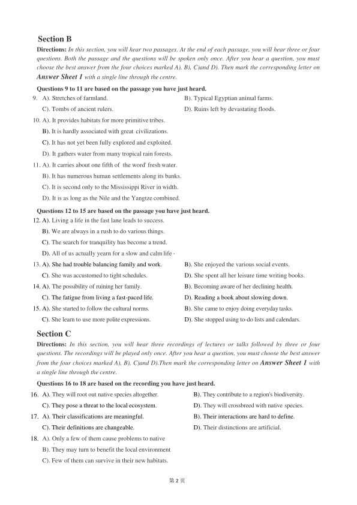
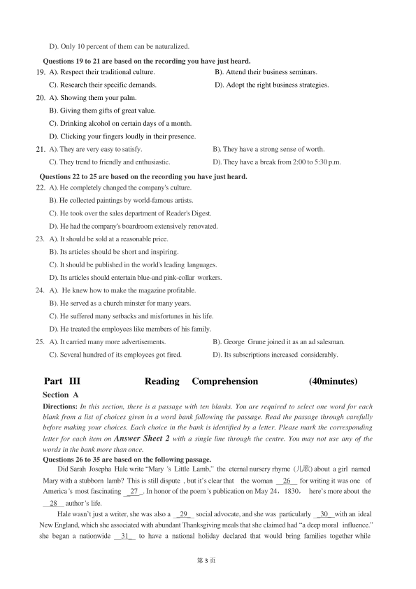
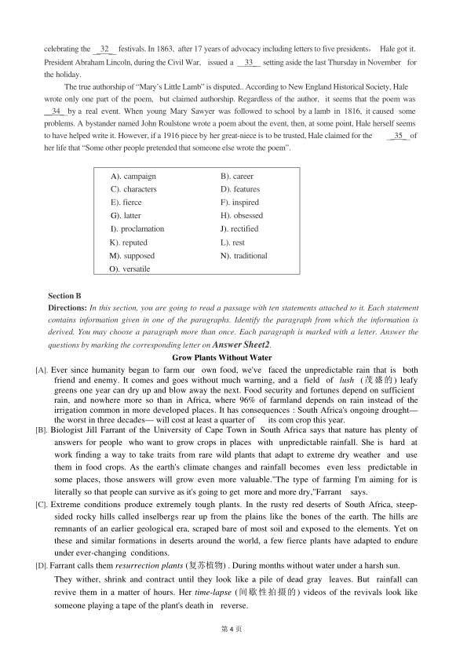

第 1 / 9 页

第1 页
2018 年6 月大学英语六级考试真题(第2 套）
Part I
Writing
(30minutes)
Directions: For this part, you are allowed 30 minutes to write an essay commenting on the importance of
building trust between teachers and students. You can cite examples to illustrate your views. You
should write at least 150 words but no more than 200words.
Part II
Listening
Comprehension
(30minutes)
Section A
Directions: In this section, you will hear two long conversations At the end of each conversation, you will
hear four questions. Both the conversation and the questions will be spoken only once. After you
hear a question, you must choose the best answer from the four choices marked A), B), C) and D).
Then mark the corresponding letter on Answer Sheet 1 with a single line through thecentre.
Questions1 to 4 are based on the conversation you have just heard.
1. A). She advocates animal protection.
B). She sells a special kind of coffee.
C). She is going to start a cafe chain.
D). She is the owner of a special cafe.
2. A). They bear a lot of similarities.
B). They are a profitable business sector.
C). They cater to different customers.
D). They help take care of customers' pets.
3. A). By giving them regular cleaning and injections.
B). By selecting breeds that are tame and peaceful.
C). By placing them at a safe distance from customers.
D). By briefing customers on how to get along with them.
4. A). They want to learn about rabbits.
B). They like to bring in their children.
C). They love the animals in her cafe.
D). They give her cafe favorite reviews.
Questions 5 to 8 are based on the conversation you have just heard.
5. A). It contains too many additives.
B). It lacks the essential vitamins.
C). It can cause obesity.
D). It is mostly garbage.
6. A). Its fancy design.
B). TV commercials.
C). Its taste and texture.
D). Peer influence.
7. A). Investing heavily in the production of sweet foods.
B). Marketing their products with ordinary ingredients.
C). Trying to trick children into buying their products.
D). Offering children more variable to choose from.
8. A). They hardly ate vegetables.
B). They seldom had junk food.
C). They favored chocolate-coated sweets.
D). They like the food advertised on TV.
查看 / 复制本页文字
第1 页 2018 年6 月大学英语六级考试真题(第2 套） Part I Writing (30minutes) Directions: For this part, you are allowed 30 minutes to write an essay commenting on the importance of building trust between teachers and students. You can cite examples to illustrate your views. You should write at least 150 words but no more than 200words. Part II Listening Comprehension (30minutes) Section A Directions: In this section, you will hear two long conversations At the end of each conversation, you will hear four questions. Both the conversation and the questions will be spoken only once. After you hear a question, you must choose the best answer from the four choices marked A), B), C) and D). Then mark the corresponding letter on Answer Sheet 1 with a single line through thecentre. Questions1 to 4 are based on the conversation you have just heard. 1. A). She advocates animal protection. B). She sells a special kind of coffee. C). She is going to start a cafe chain. D). She is the owner of a special cafe. 2. A). They bear a lot of similarities. B). They are a profitable business sector. C). They cater to different customers. D). They help take care of customers' pets. 3. A). By giving them regular cleaning and injections. B). By selecting breeds that are tame and peaceful. C). By placing them at a safe distance from customers. D). By briefing customers on how to get along with them. 4. A). They want to learn about rabbits. B). They like to bring in their children. C). They love the animals in her cafe. D). They give her cafe favorite reviews. Questions 5 to 8 are based on the conversation you have just heard. 5. A). It contains too many additives. B). It lacks the essential vitamins. C). It can cause obesity. D). It is mostly garbage. 6. A). Its fancy design. B). TV commercials. C). Its taste and texture. D). Peer influence. 7. A). Investing heavily in the production of sweet foods. B). Marketing their products with ordinary ingredients. C). Trying to trick children into buying their products. D). Offering children more variable to choose from. 8. A). They hardly ate vegetables. B). They seldom had junk food. C). They favored chocolate-coated sweets. D). They like the food advertised on TV.
第 2 / 9 页

第2 页
Section B
Directions: In this section, you will hear two passages. At the end of each passage, you will hear three or four
questions. Both the passage and the questions will be spoken only once. After you hear a question, you must
choose the best answer from the four choices marked A), B), C)and D). Then mark the corresponding letter on
Answer Sheet 1 with a single line through the centre.
Questions 9 to 11 are based on the passage you have just heard.
9. A). Stretches of farmland.
B). Typical Egyptian animal farms.
C). Tombs of ancient rulers.
D). Ruins left by devastating floods.
10. A). It provides habitats for more primitive tribes.
B). It is hardly associated with great civilizations.
C). It has not yet been fully explored and exploited.
D). It gathers water from many tropical rain forests.
11. A). It carries about one fifth of the word' fresh water.
B). It has numerous human settlements along its banks.
C). It is second only to the Mississippi River in width.
D). It is as long as the Nile and the Yangtze combined.
Questions 12 to 15 are based on the passage you have just heard.
12. A). Living a life in the fast lane leads to success.
B). We are always in a rush to do various things.
C). The search for tranquility has become a trend.
D). All of us actually yearn for a slow and calm life .
13. A). She had trouble balancing family and work.
B). She enjoyed the various social events.
C). She was accustomed to tight schedules.
D). She spent all her leisure time writing books.
14. A). The possibility of ruining her family.
B). Becoming aware of her declining health.
C). The fatigue from living a fast-paced life.
D). Reading a book about slowing down.
15. A). She started to follow the cultural norms.
B). She came to enjoy doing everydaytasks.
C). She learn to use more polite expressions.
D). She stopped using to-do lists and calendars.
Section C
Directions: In this section, you will hear three recordings of lectures or talks followed by three or four
questions. The recordings will be played only once. After you hear a question, you must choose the best answer
from the four choices marked A), B), C)and D).Then mark the corresponding letter on Answer Sheet 1 with
a single line through the centre.
Questions 16 to 18 are based on the recording you have just heard.
16. A). They will root out native species altogether.
B). They contribute to a region's biodiversity.
C). They pose a threat to the local ecosystem.
D). They will crossbreed with native species.
17. A). Their classifications are meaningful.
B). Their interactions are hard to define.
C). Their definitions are changeable.
D). Their distinctions are artificial.
18. A). Only a few of them cause problems to native
i
B). They may turn to benefit the local environment
C). Few of them can survive in their new habitats.
查看 / 复制本页文字
第2 页 Section B Directions: In this section, you will hear two passages. At the end of each passage, you will hear three or four questions. Both the passage and the questions will be spoken only once. After you hear a question, you must choose the best answer from the four choices marked A), B), C)and D). Then mark the corresponding letter on Answer Sheet 1 with a single line through the centre. Questions 9 to 11 are based on the passage you have just heard. 9. A). Stretches of farmland. B). Typical Egyptian animal farms. C). Tombs of ancient rulers. D). Ruins left by devastating floods. 10. A). It provides habitats for more primitive tribes. B). It is hardly associated with great civilizations. C). It has not yet been fully explored and exploited. D). It gathers water from many tropical rain forests. 11. A). It carries about one fifth of the word' fresh water. B). It has numerous human settlements along its banks. C). It is second only to the Mississippi River in width. D). It is as long as the Nile and the Yangtze combined. Questions 12 to 15 are based on the passage you have just heard. 12. A). Living a life in the fast lane leads to success. B). We are always in a rush to do various things. C). The search for tranquility has become a trend. D). All of us actually yearn for a slow and calm life . 13. A). She had trouble balancing family and work. B). She enjoyed the various social events. C). She was accustomed to tight schedules. D). She spent all her leisure time writing books. 14. A). The possibility of ruining her family. B). Becoming aware of her declining health. C). The fatigue from living a fast-paced life. D). Reading a book about slowing down. 15. A). She started to follow the cultural norms. B). She came to enjoy doing everydaytasks. C). She learn to use more polite expressions. D). She stopped using to-do lists and calendars. Section C Directions: In this section, you will hear three recordings of lectures or talks followed by three or four questions. The recordings will be played only once. After you hear a question, you must choose the best answer from the four choices marked A), B), C)and D).Then mark the corresponding letter on Answer Sheet 1 with a single line through the centre. Questions 16 to 18 are based on the recording you have just heard. 16. A). They will root out native species altogether. B). They contribute to a region's biodiversity. C). They pose a threat to the local ecosystem. D). They will crossbreed with native species. 17. A). Their classifications are meaningful. B). Their interactions are hard to define. C). Their definitions are changeable. D). Their distinctions are artificial. 18. A). Only a few of them cause problems to native i B). They may turn to benefit the local environment C). Few of them can survive in their new habitats.
第 3 / 9 页

第3 页
D). Only 10 percent of them can be naturalized.
Questions 19 to 21 are based on the recording you have just heard.
19. A). Respect their traditional culture.
B). Attend their business seminars.
C). Research their specific demands.
D). Adopt the right business strategies.
20. A). Showing them your palm.
B). Giving them gifts of great value.
C). Drinking alcohol on certain days of a month.
D). Clicking your fingers loudly in their presence.
21. A). They are very easy to satisfy.
B). They have a strong sense of worth.
C). They trend to friendly and enthusiastic.
D). They have a break from 2:00 to 5:30 p.m.
Questions 22 to 25 are based on the recording you have just heard.
22. A). He completely changed the company's culture.
B). He collected paintings by world-famous artists.
C). He took over the sales department of Reader's Digest.
D). He had the company’s boardroom extensively renovated.
23. A). It should be sold at a reasonable price.
B). Its articles should be short and inspiring.
C). It should be published in the world's leading languages.
D). Its articles should entertain blue-and pink-collar workers.
24. A). He knew how to make the magazine profitable.
B). He served as a church minster for many years.
C). He suffered many setbacks and misfortunes in his life.
D). He treated the employees like members of his family.
25. A). It carried many more advertisements.
B). George Grune joined it as an ad salesman.
C). Several hundred of its employees got fired.
D). Its subscriptions increased considerably.
Part III
Reading
Comprehension
(40minutes)
Section A
Directions: In this section, there is a passage with ten blanks. You are required to select one word for each
blank from a list of choices given in a word bank following the passage. Read the passage through carefully
before making your choices. Each choice in the bank is identified by a letter. Please mark the corresponding
letter for each item on Answer Sheet 2 with a single line through the centre. You may not use any of the
words in the bank more than once.
Questions 26 to 35 are based on the following passage.
Did Sarah Josepha Hale write “Mary 's Little Lamb,” the eternal nursery rhyme (儿歌) about a girl named
Mary with a stubborn lamb? This is still dispute , but it’s clear that
the woman
26
for writing it was one of
America 's most fascinating
27 _. In honor of the poem 's publication on May 24，1830，here’s more about the
28
author 's life.
Hale wasn’t just a writer, she was also a
29
social advocate, and she was particularly
30_ with an ideal
New England, which she associated with abundant Thanksgiving meals that she claimed had “a deep moral influence.”
she began a nationwide
31
to have a national holiday declared that would bring families together while
查看 / 复制本页文字
第3 页 D). Only 10 percent of them can be naturalized. Questions 19 to 21 are based on the recording you have just heard. 19. A). Respect their traditional culture. B). Attend their business seminars. C). Research their specific demands. D). Adopt the right business strategies. 20. A). Showing them your palm. B). Giving them gifts of great value. C). Drinking alcohol on certain days of a month. D). Clicking your fingers loudly in their presence. 21. A). They are very easy to satisfy. B). They have a strong sense of worth. C). They trend to friendly and enthusiastic. D). They have a break from 2:00 to 5:30 p.m. Questions 22 to 25 are based on the recording you have just heard. 22. A). He completely changed the company's culture. B). He collected paintings by world-famous artists. C). He took over the sales department of Reader's Digest. D). He had the company’s boardroom extensively renovated. 23. A). It should be sold at a reasonable price. B). Its articles should be short and inspiring. C). It should be published in the world's leading languages. D). Its articles should entertain blue-and pink-collar workers. 24. A). He knew how to make the magazine profitable. B). He served as a church minster for many years. C). He suffered many setbacks and misfortunes in his life. D). He treated the employees like members of his family. 25. A). It carried many more advertisements. B). George Grune joined it as an ad salesman. C). Several hundred of its employees got fired. D). Its subscriptions increased considerably. Part III Reading Comprehension (40minutes) Section A Directions: In this section, there is a passage with ten blanks. You are required to select one word for each blank from a list of choices given in a word bank following the passage. Read the passage through carefully before making your choices. Each choice in the bank is identified by a letter. Please mark the corresponding letter for each item on Answer Sheet 2 with a single line through the centre. You may not use any of the words in the bank more than once. Questions 26 to 35 are based on the following passage. Did Sarah Josepha Hale write “Mary 's Little Lamb,” the eternal nursery rhyme (儿歌) about a girl named Mary with a stubborn lamb? This is still dispute , but it’s clear that the woman 26 for writing it was one of America 's most fascinating 27 _. In honor of the poem 's publication on May 24，1830，here’s more about the 28 author 's life. Hale wasn’t just a writer, she was also a 29 social advocate, and she was particularly 30_ with an ideal New England, which she associated with abundant Thanksgiving meals that she claimed had “a deep moral influence.” she began a nationwide 31 to have a national holiday declared that would bring families together while
第 4 / 9 页

第4 页
celebrating the
32
festivals. In 1863, after 17 years of advocacy including letters to five presidents，Hale got it.
President Abraham Lincoln, during the Civil War,
issued a
33
the holiday.
setting aside the last Thursday in November for
The true authorship of “Mary’s Little Lamb” is disputed.. According to New England Historical Society, Hale
wrote only one part of the poem, but claimed authorship. Regardless of the author, it seems that the poem was
34
by a real event. When young Mary Sawyer was followed to school by a lamb in 1816, it caused some
problems. A bystander named John Roulstone wrote a poem about the event, then, at some point, Hale herself seems
to have helped write it. However, if a 1916 piece by her great-niece is to be trusted, Hale claimed for the
her life that “Some other people pretended that someone else wrote the poem”.
35
of
A). campaign
B). career
C). characters
D). features
E). fierce
F). inspired
G). latter
H). obsessed
I). proclamation
J). rectified
K). reputed
L). rest
M). supposed
N). traditional
O). versatile
Section B
Directions: In this section, you are going to read a passage with ten statements attached to it. Each statement
contains information given in one of the paragraphs. Identify the paragraph from which the information is
derived. You may choose a paragraph more than once. Each paragraph is marked with a letter. Answer the
questions by marking the corresponding letter on Answer Sheet2.
Grow Plants Without Water
[A]. Ever since humanity began to farm our own food, we've faced the unpredictable rain that is both
friend and enemy. It comes and goes without much warning, and a field of lush (茂盛的) leafy
greens one year can dry up and blow away the next. Food security and fortunes depend on sufficient
rain, and nowhere more so than in Africa, where 96% of farmland depends on rain instead of the
irrigation common in more developed places. It has consequences : South Africa's ongoing drought—
the worst in three decades— will cost at least a quarter of
its com crop this year.
[B]. Biologist Jill Farrant of the University of Cape Town in South Africa says that nature has plenty of
answers for people who want to grow crops in places with unpredictable rainfall. She is hard at
work finding a way to take traits from rare wild plants that adapt to extreme dry weather and use
them in food crops. As the earth's climate changes and rainfall becomes
even less
predictable in
some places, those answers will grow even more valuable."The type of farming I'm aiming for is
literally so that people can survive as it's going to get more and more dry,"Farrant
says.
[C]. Extreme conditions produce extremely tough plants. In the rusty red deserts of South Africa, steep-
sided rocky hills called inselbergs rear up from the plains like the bones of the earth. The hills are
remnants of an earlier geological era, scraped bare of most soil and exposed to the elements. Yet on
these and similar formations in deserts around the world, a few fierce plants have adapted to endure
under ever-changing conditions.
[D]. Farrant calls them resurrection plants (复苏植物) . During months without water under a harsh sun.
They wither, shrink and contract until they look like a pile of dead gray
leaves. But
rainfall can
revive them in a matter of hours. Her time-lapse (间歇性拍摄的) videos of the revivals look like
someone playing a tape of the plant's death in
reverse.
查看 / 复制本页文字
第4 页 celebrating the 32 festivals. In 1863, after 17 years of advocacy including letters to five presidents，Hale got it. President Abraham Lincoln, during the Civil War, issued a 33 the holiday. setting aside the last Thursday in November for The true authorship of “Mary’s Little Lamb” is disputed.. According to New England Historical Society, Hale wrote only one part of the poem, but claimed authorship. Regardless of the author, it seems that the poem was 34 by a real event. When young Mary Sawyer was followed to school by a lamb in 1816, it caused some problems. A bystander named John Roulstone wrote a poem about the event, then, at some point, Hale herself seems to have helped write it. However, if a 1916 piece by her great-niece is to be trusted, Hale claimed for the her life that “Some other people pretended that someone else wrote the poem”. 35 of A). campaign B). career C). characters D). features E). fierce F). inspired G). latter H). obsessed I). proclamation J). rectified K). reputed L). rest M). supposed N). traditional O). versatile Section B Directions: In this section, you are going to read a passage with ten statements attached to it. Each statement contains information given in one of the paragraphs. Identify the paragraph from which the information is derived. You may choose a paragraph more than once. Each paragraph is marked with a letter. Answer the questions by marking the corresponding letter on Answer Sheet2. Grow Plants Without Water [A]. Ever since humanity began to farm our own food, we've faced the unpredictable rain that is both friend and enemy. It comes and goes without much warning, and a field of lush (茂盛的) leafy greens one year can dry up and blow away the next. Food security and fortunes depend on sufficient rain, and nowhere more so than in Africa, where 96% of farmland depends on rain instead of the irrigation common in more developed places. It has consequences : South Africa's ongoing drought— the worst in three decades— will cost at least a quarter of its com crop this year. [B]. Biologist Jill Farrant of the University of Cape Town in South Africa says that nature has plenty of answers for people who want to grow crops in places with unpredictable rainfall. She is hard at work finding a way to take traits from rare wild plants that adapt to extreme dry weather and use them in food crops. As the earth's climate changes and rainfall becomes even less predictable in some places, those answers will grow even more valuable."The type of farming I'm aiming for is literally so that people can survive as it's going to get more and more dry,"Farrant says. [C]. Extreme conditions produce extremely tough plants. In the rusty red deserts of South Africa, steep- sided rocky hills called inselbergs rear up from the plains like the bones of the earth. The hills are remnants of an earlier geological era, scraped bare of most soil and exposed to the elements. Yet on these and similar formations in deserts around the world, a few fierce plants have adapted to endure under ever-changing conditions. [D]. Farrant calls them resurrection plants (复苏植物) . During months without water under a harsh sun. They wither, shrink and contract until they look like a pile of dead gray leaves. But rainfall can revive them in a matter of hours. Her time-lapse (间歇性拍摄的) videos of the revivals look like someone playing a tape of the plant's death in reverse.
第 5 / 9 页
第5 页
[E]. The big difference between "drought-tolerant" plants and these tough
plants:
metabolism.
Many
different kinds of plants have developed tactics to weather dry spells. Some plants store reserves of
water to see them through a drought ; others send roots deep down to subsurface water supplies. But
once these plants use up their stored reserve or tap out the underground supply, they cease growing
and start to die. They may be able to handle a drought of some length, and many people use the term
"drought tolerant" to describe such plants, but they never actually stop needing to consume water, so
Farrant prefers to call them drought resistant.
[F].
Resurrection plants, defined as those capable of recovering from holding less than 0.1 grams of water
per
gram of dry mass, are different. They lack water-storing structures, and their existence on rock
faces prevents them from tapping groundwater, so they have instead developed the ability to change
their metabolism .When they detect an extended dry period, they divert their metabolisms, producing
sugars and certain stress-associated proteins and other materials in their tissues. As the
plant dries,
these resources take on first the properties of honey, then rubber, and finally enter a glass-like state
that is "the most stable state that the plant can maintain," Farrant says. That
slows
the
plant's
metabolism and protects its dried-out tissues. The plants also change shape, shrinking to minimize the
surface area through which their remaining water might evaporate. They can recover from months
and years without water, depending on the species.
[G]. What else can do this dry-out-and-revive trick? Seeds-almost all of them. At the start of her career,
Farrant studied . recalcitrant seeds (执拗性种子) ," such as avocados, coffee and lychee. While tasty,
such seeds are delicate--they cannot bud and grow if they dry out (as you may know if you've
ever
tried to grow a tree from an avocado pit). In the seed world, that makes them rare, because most seeds
from flowering plants are quite robust. Most seeds can wait out the dry, unwelcoming seasons until
conditions are right and they sprout (发芽). Yet once they start growing, such plants seem not to
retain the ability to hit the pause button on metabolism in their stems or
leaves.
[H]. After completing her Ph. D. on seeds, Farrant began investigating whether it
might
be
possible to
isolate the properties that make most seeds so resilient (迅速恢复活力的) and transfer them to other
plant tissues. What Farrant and others have found over the past two decades is that there are many
genes involved in resurrection plants' response to dryness. Many of them are the same that regulate
how seeds become dryness-tolerant while still attached to their parent plants. Now they are trying to
figure out what molecular signaling processes activate those seed-building genes in resurrection plants—
and how to reproduce them in crops."Most genes are regulated by a master
set
of
genes,"Farrant
says."We're looking at gene promoters and what would be
their master switch."
[I].
Once Farrant and her colleagues feel they have a better sense of which switches to throw, they will
have to find the best way to do so in useful crops."I'm trying three methods of breeding,"Farrant says :
conventional, genetic modification arid gene editing. She says she is aware that plenty of people do
not want to eat genetically modified crops, but she is pushing ahead with every available tool until
one works. Farmers and consumers alike can choose whether or not to use whichever version
prevails :"I'm giving people an option. "
[J]. Farrant and others in the resurrection business got together last year to discuss the best species of
resurrection plant to use as a lab model. Just like medical researchers use rats to test ideas for human
medical treatments, botanists use plants that are relatively easy to grow in a lab or greenhouse setting
to test their ideas for related species. The Queensland rock violet is one of
the
best
studied
resurrection plants so far, with a draft genome (基因图谱) published last year by a Chinese team.
Also last year, Farrant and colleagues published a detailed molecular study of another candidate,
Xerophyta viscosa, a tough-as-nail south African plant with lily-like flowers, and she says that a
genome is on the way. one or both of these models will help researchers test their ideas — so far
mostly done in the lab— on test plots.
[K]. Understanding the basic science first is
key. There are good reasons why crop plants do not use
dryness defenses already. For instance, there's a high energy cost in switching from a regular
metabolism to an almost-no-water metabolism. It will also be necessary to understand what sort of
yield farmers might expect and to establish the plant's safety."The yield is never going to be
high,"Farrant says, so these plants will be targeted not at Iowa farmers trying to squeeze more cash
查看 / 复制本页文字
第5 页 [E]. The big difference between "drought-tolerant" plants and these tough plants: metabolism. Many different kinds of plants have developed tactics to weather dry spells. Some plants store reserves of water to see them through a drought ; others send roots deep down to subsurface water supplies. But once these plants use up their stored reserve or tap out the underground supply, they cease growing and start to die. They may be able to handle a drought of some length, and many people use the term "drought tolerant" to describe such plants, but they never actually stop needing to consume water, so Farrant prefers to call them drought resistant. [F]. Resurrection plants, defined as those capable of recovering from holding less than 0.1 grams of water per gram of dry mass, are different. They lack water-storing structures, and their existence on rock faces prevents them from tapping groundwater, so they have instead developed the ability to change their metabolism .When they detect an extended dry period, they divert their metabolisms, producing sugars and certain stress-associated proteins and other materials in their tissues. As the plant dries, these resources take on first the properties of honey, then rubber, and finally enter a glass-like state that is "the most stable state that the plant can maintain," Farrant says. That slows the plant's metabolism and protects its dried-out tissues. The plants also change shape, shrinking to minimize the surface area through which their remaining water might evaporate. They can recover from months and years without water, depending on the species. [G]. What else can do this dry-out-and-revive trick? Seeds-almost all of them. At the start of her career, Farrant studied . recalcitrant seeds (执拗性种子) ," such as avocados, coffee and lychee. While tasty, such seeds are delicate--they cannot bud and grow if they dry out (as you may know if you've ever tried to grow a tree from an avocado pit). In the seed world, that makes them rare, because most seeds from flowering plants are quite robust. Most seeds can wait out the dry, unwelcoming seasons until conditions are right and they sprout (发芽). Yet once they start growing, such plants seem not to retain the ability to hit the pause button on metabolism in their stems or leaves. [H]. After completing her Ph. D. on seeds, Farrant began investigating whether it might be possible to isolate the properties that make most seeds so resilient (迅速恢复活力的) and transfer them to other plant tissues. What Farrant and others have found over the past two decades is that there are many genes involved in resurrection plants' response to dryness. Many of them are the same that regulate how seeds become dryness-tolerant while still attached to their parent plants. Now they are trying to figure out what molecular signaling processes activate those seed-building genes in resurrection plants— and how to reproduce them in crops."Most genes are regulated by a master set of genes,"Farrant says."We're looking at gene promoters and what would be their master switch." [I]. Once Farrant and her colleagues feel they have a better sense of which switches to throw, they will have to find the best way to do so in useful crops."I'm trying three methods of breeding,"Farrant says : conventional, genetic modification arid gene editing. She says she is aware that plenty of people do not want to eat genetically modified crops, but she is pushing ahead with every available tool until one works. Farmers and consumers alike can choose whether or not to use whichever version prevails :"I'm giving people an option. " [J]. Farrant and others in the resurrection business got together last year to discuss the best species of resurrection plant to use as a lab model. Just like medical researchers use rats to test ideas for human medical treatments, botanists use plants that are relatively easy to grow in a lab or greenhouse setting to test their ideas for related species. The Queensland rock violet is one of the best studied resurrection plants so far, with a draft genome (基因图谱) published last year by a Chinese team. Also last year, Farrant and colleagues published a detailed molecular study of another candidate, Xerophyta viscosa, a tough-as-nail south African plant with lily-like flowers, and she says that a genome is on the way. one or both of these models will help researchers test their ideas — so far mostly done in the lab— on test plots. [K]. Understanding the basic science first is key. There are good reasons why crop plants do not use dryness defenses already. For instance, there's a high energy cost in switching from a regular metabolism to an almost-no-water metabolism. It will also be necessary to understand what sort of yield farmers might expect and to establish the plant's safety."The yield is never going to be high,"Farrant says, so these plants will be targeted not at Iowa farmers trying to squeeze more cash
第 6 / 9 页
第6 页
out of high-yield fields, but subsistence farmers who need help to survive a drought like the present
one in South Africa."My vision is for the subsistence farmer," Farrant says."I'm targeting crops that are
of African value. ".
36. There are a couple of plants tough and adaptable enough to survive on bare rocky hills and in deserts.
37. Farrant is trying to isolate genes in resurrection plants and reproduce them in crops.
38. Farmers in South
Africa are more at the mercy of nature, especially inconsistent rainfall.
39. Resurrection crops are most likely to be the choice of subsistence
farmers.
40.Even though many plants have developed various tactics to cope with dry weather, they cannot
survive a prolonged drought.
41. Despite consumer resistance, researchers are pushing ahead with genetic modification of crops.
42. Most seeds can pull through dry spells and begin growing when conditions are ripe, but once this
process starts, it cannot be held back.
43. Farrant is working hard to cultivate food crops that call survive extreme dryness by studying the
traits of rare wild plants.
44. By adjusting their metabolism, resurrection plants can recover
from an extended period of drought.
45. Resurrection plants can come back to life in a short time after a
rainfall.
Section C
Directions：There are 2 passages in this section. Each passage is followed by some questions or
unfinished statements. For each of them there are four choices marked A), B), C) and D). You
should decide on the best choice and mark the corresponding letter on Answer Sheet 2 with a
single line through the centre
passage one
Questions 46 to 50 are based on the following passage.
Human memory is notoriously unreliable. Even people with the sharpest facial-recognition
skills can only remember so much.
It's tough to quantify how good a person is at remembering. No one really knows how many
different faces someone can recall, for example, but various estimates tend to hover in the
thousands-based on the number of acquaintances a person might have.
Machines aren't limited this way, Give the right computer a massive database of faces, and it
can process what it sees-then recognize a face it's told to find-with remarkable speed and precision.
This skill is what supports the enormous promise of facial-recognition software in the 2lst century.
It's also what makes contemporary surveillance systems so scary.
The thing is, machines still have limitations when it comes to facial recognition. And scientists
are only just beginning to understand what those constraints are. To begin to figure out how
computers are struggling, researchers at the University of Washington created a massive database of
faces- they call it MegaFace- and tested a variety of facial-recognition algorithms (算法) as they
scaled up in complexity. The idea was to test the machines on a database that included up to 1
million different images of nearly 700,000 different people-and not just a large database featuring a
relatively small number of different faces, more consistent with what's been used in other research.
As the databases grew, machine accuracy dipped across the board. Algorithms that were right
95% of the time when they were dealing with a 13, 000-image database, for example, were accurate
about 70% of the time when confronted with 1 million images. That's still pretty good, says one of
the researchers, Ira Kemelmacher-Shlizerman."Much better than we expected, "she said.
Machines also had difficulty adjusting for people who look a lot alike-either doppelgangers(长
相极相似的人),whom the machine would have trouble identifying as two separate people, or the
same person who appeared in different photos at different ages or in different lighting, whom the
查看 / 复制本页文字
第6 页 out of high-yield fields, but subsistence farmers who need help to survive a drought like the present one in South Africa."My vision is for the subsistence farmer," Farrant says."I'm targeting crops that are of African value. ". 36. There are a couple of plants tough and adaptable enough to survive on bare rocky hills and in deserts. 37. Farrant is trying to isolate genes in resurrection plants and reproduce them in crops. 38. Farmers in South Africa are more at the mercy of nature, especially inconsistent rainfall. 39. Resurrection crops are most likely to be the choice of subsistence farmers. 40.Even though many plants have developed various tactics to cope with dry weather, they cannot survive a prolonged drought. 41. Despite consumer resistance, researchers are pushing ahead with genetic modification of crops. 42. Most seeds can pull through dry spells and begin growing when conditions are ripe, but once this process starts, it cannot be held back. 43. Farrant is working hard to cultivate food crops that call survive extreme dryness by studying the traits of rare wild plants. 44. By adjusting their metabolism, resurrection plants can recover from an extended period of drought. 45. Resurrection plants can come back to life in a short time after a rainfall. Section C Directions：There are 2 passages in this section. Each passage is followed by some questions or unfinished statements. For each of them there are four choices marked A), B), C) and D). You should decide on the best choice and mark the corresponding letter on Answer Sheet 2 with a single line through the centre passage one Questions 46 to 50 are based on the following passage. Human memory is notoriously unreliable. Even people with the sharpest facial-recognition skills can only remember so much. It's tough to quantify how good a person is at remembering. No one really knows how many different faces someone can recall, for example, but various estimates tend to hover in the thousands-based on the number of acquaintances a person might have. Machines aren't limited this way, Give the right computer a massive database of faces, and it can process what it sees-then recognize a face it's told to find-with remarkable speed and precision. This skill is what supports the enormous promise of facial-recognition software in the 2lst century. It's also what makes contemporary surveillance systems so scary. The thing is, machines still have limitations when it comes to facial recognition. And scientists are only just beginning to understand what those constraints are. To begin to figure out how computers are struggling, researchers at the University of Washington created a massive database of faces- they call it MegaFace- and tested a variety of facial-recognition algorithms (算法) as they scaled up in complexity. The idea was to test the machines on a database that included up to 1 million different images of nearly 700,000 different people-and not just a large database featuring a relatively small number of different faces, more consistent with what's been used in other research. As the databases grew, machine accuracy dipped across the board. Algorithms that were right 95% of the time when they were dealing with a 13, 000-image database, for example, were accurate about 70% of the time when confronted with 1 million images. That's still pretty good, says one of the researchers, Ira Kemelmacher-Shlizerman."Much better than we expected, "she said. Machines also had difficulty adjusting for people who look a lot alike-either doppelgangers(长 相极相似的人),whom the machine would have trouble identifying as two separate people, or the same person who appeared in different photos at different ages or in different lighting, whom the
第 7 / 9 页
第7 页
machine would incorrectly view as separate people.
"Once we scale up, algorithms must be sensitive to tiny changes in identities and at the same
time invariant to lighting, pose, age, "Kemelmacher-Shlizerman said.
The trouble is, for many of the researchers who'd like to design systems to address these
challenges, massive datasets for experimentation just don't exist--at least, not in formats that are
accessible to academic researchers.Training sets like the ones Google and Facebook have are
private. There are no public databases that contain millions of faces. MegaFace's creators say it's
the largest publicly available facial-recognition dataset out there.
“An ultimate face recognition algorithm should perform with billions of people in a dataset, ”the
researchers wrote.
46. Compared with human memory, machines can
.
A) identify human faces more efficiently
B) tell a friend from a mere acquaintance
C) store an unlimited number of human faces
D) perceive images invisible to the human eye
47. Why did researchers create MegaFace?
A) To enlarge the volume of the facial-recognition database
B) To increase the variety of facial-recognition software
C) To understand computers' problems with facial recognition
D) To reduce the complexity of facial-recognition algorithms
48. What does the passage say about machine accuracy?
A) It falls short of researchers' expectations.
B) It improves with added computing power.
C) It varies greatly with different algorithms.
D) It decreases as the database size increases.
49. What is said to be a shortcoming of facial-recognition machines?
A) They cannot easily tell apart people with near-identical appearances.
B) They have difficulty identifying changes in facial expressions
C) They are not sensitive to minute changes in people's mood
D) They have problems distinguishing people of the same age
50. What is the difficulty confronting researchers of facial-recognition machines?
A) No computer is yet able to handle huge datasets of human faces
B) There do not exist public databases with sufficient face sampler
C) There are no appropriate algorithms to process the face samples
D) They have trouble converting face datasets into the right format.
Passage Two
Questions 51 to 55 are based on the following passage.
There’re currently 21.5 million students in America, and many will be funding their college on
borrowed money. Given that there's now over $1.3 trillion in student loans on the books, it's pretty
clear that many students are far from sensible. The average student's debt upon graduation now
approaches $40, 000, and as college becomes ever more expensive, calls to make it "free" are
multiplying. Even Hillary Clinton says that when it comes to college, "Costs won't be a barrier."
But the only way college could be free is if the faculty and staff donated their time, the
buildings required no maintenance, and campuses required no utilities. As long as it's impossible
to produce something from nothing costs are absolutely a barrier.
查看 / 复制本页文字
第7 页 machine would incorrectly view as separate people. "Once we scale up, algorithms must be sensitive to tiny changes in identities and at the same time invariant to lighting, pose, age, "Kemelmacher-Shlizerman said. The trouble is, for many of the researchers who'd like to design systems to address these challenges, massive datasets for experimentation just don't exist--at least, not in formats that are accessible to academic researchers.Training sets like the ones Google and Facebook have are private. There are no public databases that contain millions of faces. MegaFace's creators say it's the largest publicly available facial-recognition dataset out there. “An ultimate face recognition algorithm should perform with billions of people in a dataset, ”the researchers wrote. 46. Compared with human memory, machines can . A) identify human faces more efficiently B) tell a friend from a mere acquaintance C) store an unlimited number of human faces D) perceive images invisible to the human eye 47. Why did researchers create MegaFace? A) To enlarge the volume of the facial-recognition database B) To increase the variety of facial-recognition software C) To understand computers' problems with facial recognition D) To reduce the complexity of facial-recognition algorithms 48. What does the passage say about machine accuracy? A) It falls short of researchers' expectations. B) It improves with added computing power. C) It varies greatly with different algorithms. D) It decreases as the database size increases. 49. What is said to be a shortcoming of facial-recognition machines? A) They cannot easily tell apart people with near-identical appearances. B) They have difficulty identifying changes in facial expressions C) They are not sensitive to minute changes in people's mood D) They have problems distinguishing people of the same age 50. What is the difficulty confronting researchers of facial-recognition machines? A) No computer is yet able to handle huge datasets of human faces B) There do not exist public databases with sufficient face sampler C) There are no appropriate algorithms to process the face samples D) They have trouble converting face datasets into the right format. Passage Two Questions 51 to 55 are based on the following passage. There’re currently 21.5 million students in America, and many will be funding their college on borrowed money. Given that there's now over $1.3 trillion in student loans on the books, it's pretty clear that many students are far from sensible. The average student's debt upon graduation now approaches $40, 000, and as college becomes ever more expensive, calls to make it "free" are multiplying. Even Hillary Clinton says that when it comes to college, "Costs won't be a barrier." But the only way college could be free is if the faculty and staff donated their time, the buildings required no maintenance, and campuses required no utilities. As long as it's impossible to produce something from nothing costs are absolutely a barrier.
第 8 / 9 页
第8 页
The actual question we debate is who should pay for people to go to college. If taxpayers are
to bear the cost of forgiving student loans, shouldn't they have a say in how their money is used?
At least taxpayers should be able to decide what students will study on the public dime. If
we're going to force taxpayers to foot the bill for college degrees, students should only study those
subjects that’re of greatest benefit to taxpayers. After all, students making their own choices in this
respect is what caused the problem in the first place. We simply don't need more poetry, gender
studies, or sociology majors. How do we know which subjects benefit society? Easy.
Average starting salaries give a clear indication of what type of training society needs its new
workers to have. Certainly, there're benefits to a college major beyond the job a student can
perform. But if we're talking about the benefits to society, the only thing that matters is what the
major enables the student to produce for society. And the value of what the student can produce is
reflected in the wage employers are willing to pay the student to produce it.
A low wage for elementary school teachers, however, doesn't mean elementary education isn’t
important. It simply means there're too many elementary school teachers already.
Meanwhile, there're few who're willing and able to perform jobs requiring a petroleum
engineering major, so the value of one more of those people is very high
So we can have taxpayers pick up students' tuition in exchange for dictating
what
those
students will study. Or we can allow students both to choose their majors and pay for
their
education themselves. But in the end ,one of two things is true:
Either a college major is worth its cost or it isn't. If yes, taxpayer financing isn't needed If not
taxpayer financing isn't desirable. Either way, taxpayers have no business paying for students'
college education.
51. What does the author think of college students funding their education through loans?
A)They only expect to get huge returns.
C) They benefit at taxpayers expense.
B)They are acting in an irrational way.
D) They will regret doing so someday.
52. In the author's opinion, free college education is
.
A) impractical
B)unsustainable
C)a goal to strive for
D) a way to social equality
53. What should students do if taxpayers are to bear their college costs?
A) Work even harder to repay society.
B) Choose their subjects more carefully.
C) Choose majors that will serve society's practical need.
D) Allow taxpayers to participate in college administration.
53. What does the author say about the value of a student's college education?
E) It is underestimated by profit-seeking employers.
B) It is to be proved by what they can do on the job.
C) It is well reflected in their average starting salary.
D) It is embodied in how they remove social barriers.
55. What message does the author want to convey in the passage?
A)Students should think care fully whether to go to college
B) Taxpayers should only finance the most gifted students.
C)The worth of a college education is open to debate.
D) College students should fund their own education..
查看 / 复制本页文字
第8 页 The actual question we debate is who should pay for people to go to college. If taxpayers are to bear the cost of forgiving student loans, shouldn't they have a say in how their money is used? At least taxpayers should be able to decide what students will study on the public dime. If we're going to force taxpayers to foot the bill for college degrees, students should only study those subjects that’re of greatest benefit to taxpayers. After all, students making their own choices in this respect is what caused the problem in the first place. We simply don't need more poetry, gender studies, or sociology majors. How do we know which subjects benefit society? Easy. Average starting salaries give a clear indication of what type of training society needs its new workers to have. Certainly, there're benefits to a college major beyond the job a student can perform. But if we're talking about the benefits to society, the only thing that matters is what the major enables the student to produce for society. And the value of what the student can produce is reflected in the wage employers are willing to pay the student to produce it. A low wage for elementary school teachers, however, doesn't mean elementary education isn’t important. It simply means there're too many elementary school teachers already. Meanwhile, there're few who're willing and able to perform jobs requiring a petroleum engineering major, so the value of one more of those people is very high So we can have taxpayers pick up students' tuition in exchange for dictating what those students will study. Or we can allow students both to choose their majors and pay for their education themselves. But in the end ,one of two things is true: Either a college major is worth its cost or it isn't. If yes, taxpayer financing isn't needed If not taxpayer financing isn't desirable. Either way, taxpayers have no business paying for students' college education. 51. What does the author think of college students funding their education through loans? A)They only expect to get huge returns. C) They benefit at taxpayers expense. B)They are acting in an irrational way. D) They will regret doing so someday. 52. In the author's opinion, free college education is . A) impractical B)unsustainable C)a goal to strive for D) a way to social equality 53. What should students do if taxpayers are to bear their college costs? A) Work even harder to repay society. B) Choose their subjects more carefully. C) Choose majors that will serve society's practical need. D) Allow taxpayers to participate in college administration. 53. What does the author say about the value of a student's college education? E) It is underestimated by profit-seeking employers. B) It is to be proved by what they can do on the job. C) It is well reflected in their average starting salary. D) It is embodied in how they remove social barriers. 55. What message does the author want to convey in the passage? A)Students should think care fully whether to go to college B) Taxpayers should only finance the most gifted students. C)The worth of a college education is open to debate. D) College students should fund their own education..
第 9 / 9 页
第9 页
Part I
Translation
(30minutes)
Directions：For this part, you are allowed 30 minutes to translate a passage from Chinese into English. You
should write your answer on Answer Sheet 2.
中国目前拥有世界上最大最快的高速铁路网。高铁列车的运行速度还将继续提升，更多的城市将
修建高铁站。高铁大大缩短了人们出行的时间。相对飞机而言，高铁列车的突出优势在于准时，因为
基本不受天气或交通管制的影响。高铁极大地改变了中国人的生活方式。如今，它已经成了很多人商
务旅行的首选交通工具。越来越多的人也在假日乘高铁外出旅游。还有不少年轻人选择在一个城市工
作而在邻近城市居住，每天乘高铁上下班。
查看 / 复制本页文字
第9 页 Part I Translation (30minutes) Directions：For this part, you are allowed 30 minutes to translate a passage from Chinese into English. You should write your answer on Answer Sheet 2. 中国目前拥有世界上最大最快的高速铁路网。高铁列车的运行速度还将继续提升，更多的城市将 修建高铁站。高铁大大缩短了人们出行的时间。相对飞机而言，高铁列车的突出优势在于准时，因为 基本不受天气或交通管制的影响。高铁极大地改变了中国人的生活方式。如今，它已经成了很多人商 务旅行的首选交通工具。越来越多的人也在假日乘高铁外出旅游。还有不少年轻人选择在一个城市工 作而在邻近城市居住，每天乘高铁上下班。